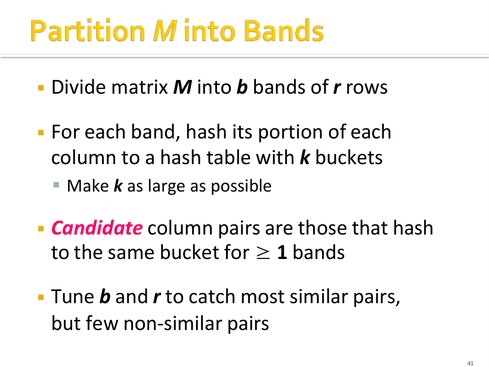
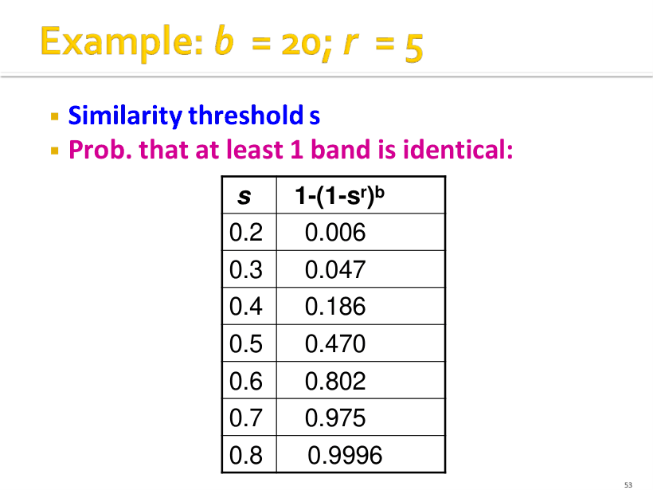

P1
开篇：Similarity Search I
这是标题页：第三讲主题是相似性搜索（Similarity Search-I），幻灯片来自斯坦福大学 Jure Leskovec 的课程。本讲主线是三件套：Shingling、Min-Hashing、LSH。
对应课件 p1–p55（抽取文本 PAGE 0–54）。这一讲最容易出手算大题：Jaccard、Min-Hash 签名矩阵、1−(1−sʳ)ᵇ 三条线都能独立命题，同时是 L4（LSH 家族）和 L9（协同过滤里的 Jaccard/余弦）的地基。
图像检索：把每张图编码成一个特征向量（课件举例是 4k 维），查询图像 patch 就变成"在 embedding 空间里找最近邻"。RAG（Retrieval Augmented Generation）给 LLM 外挂知识库，动机是 LLM 的三个毛病：domain knowledge gap、factuality 问题、hallucination；工程落点就是 vector database（向量库）。所以"找相似"不是玩具问题，而是大模型时代的检索底座。
课件 p9 把它抽象成两类问题：数据点 x₁, x₂, … 是高维向量（图像 = 一长串像素颜色），给定距离函数 d，(a) 单查询：给定 q，找出所有满足 d(q, xⱼ) ≤ s 的点，朴素做法 O(N)，LSH 后是 O(1)；(b) 全对：找出所有满足 d(xᵢ, xⱼ) ≤ s 的点对，朴素做法 O(N²)，LSH 后是 O(N)。
这里的 O(1)、O(N) 都是"期望 + 近似"意义下的复杂度，不是确定性保证；代价就是下面要讲的 false negative。
朴素做法要对所有文档两两比相似度，对数 = N(N−1)/2，N = 10⁶ 时约 5×10¹¹ 次比较。按每秒 10⁶ 次比较、一天约 10⁵ 秒算，需要 5×10¹¹ ÷ 10⁶ = 5×10⁵ 秒 ≈ 5 天；N 涨到 10⁷，就要一年以上。另一类场景是 10B 篇文档里，给查询文档 q 快速找最相似的一篇。
这个算例是送分题：记住"对数 ≈ N²/2，时间 = 对数 ÷ 每秒比较数，秒换天除以 86400（约 10⁵）"，换任何 N 都能重算。
LSH（Locality-Sensitive Hashing，局部敏感哈希）不是一种算法，而是一族相关技术：用多个不同的 hash 函数把 item 扔进桶，只检查"至少在一种哈希下同桶"的那些 item 对。Upside：设计得当时只有很小一部分点对被真正检查。Downside：存在 false negatives——确实相似的 item 可能因为没同桶而被永远漏掉。
所以 LSH 永远只是"筛候选"：p53 明确说，候选对还要在主内存里确认签名真的相似，可选地再回原始数据做一次精确验证。问"为什么 LSH 是近似算法"，答"false negative 不可避免，b、r 只能调概率，不能清零"。
| 任务 | 朴素做法 | LSH 做法 | 付出的代价 |
|---|---|---|---|
| 单查询：d(q,xⱼ) ≤ s | O(N) 全表扫 | 期望 O(1) | 漏掉部分真近邻（false negative） |
| 所有相似点对（文档去重） | O(N²)，精确是 N(N−1)/2 对 | 期望 O(N) | 候选对仍需精确验证；阈值附近最难分 |
| 签名存储：10⁵ 篇 × 100 个 4 字节整数 | 0/1 矩阵极稀疏，无法显式构造 | 约 40MB | 只留 min-hash 值，原始信息不可恢复 |
文档的 k-shingle 是文档中出现的长度为 k 的 token 序列；token 可以是字符、单词或别的东西，取决于应用。文档 D 就被表示成它全部 k-shingle 构成的集合 S(D)。为了省内存，再把每个 shingle 哈希成（比如）4 字节的整数，于是文档 = 它所有 k-shingle 哈希值的集合。
例（p19）：k=2，D1 = abcab，则 S(D1) = {ab, bc, ca}，哈希后 h(D1) = {1, 5, 7}。注意 "ab" 在 abcab 里出现两次，但集合里只算一次，5 个字符只有 3 个不同的 2-shingle——这是最容易算错的地方。
课件说实践中常用 k = 8、9 或 10（字符级）。判断标准是"能不能把相似与不相似的文档分开"：k 太小（极端例子 k=1，字符只有 26 种），任意两篇文档的 shingle 集合几乎重合，Jaccard 都接近 1，完全没有区分度；k 太大，轻微改写就会让集合几乎不重合，近似重复也测不出来，集合还会膨胀。所以 k 是"区分度"与"鲁棒性"的折中。
必背性质：改一个词只影响距该词 k−1 距离以内的 shingle。换成一个数：一个词最多影响 k 个 k-shingle（起点可以是 i−k+1 到 i，共 k 个窗口）——考试常直接问"改一个词影响几个 shingle"，答 k。
Shingle 集合丢了什么：单个 shingle 内部保留顺序，但集合本身无序，所以整段的语序信息基本丢失。要保留顺序就得加长 k 或用序列模型。
行 = shingle（元素），列 = 文档（集合），第 e 行第 s 列为 1 当且仅当元素 e 属于集合 s。两列的相似度就是它们"取值为 1 的那些行"的 Jaccard 相似度。真实矩阵极度稀疏，课件原话是"我们不真的构造这个矩阵，只是想象它存在"。
手算技巧（也是 Min-Hash 证明的骨架）：只盯两列，把所有行分成 4 类——A = (1,1)、B = (1,0)、C = (0,1)、D = (0,0)，记 a、b、c 为 A、B、C 类的行数，则 sim = a / (a+b+c)。D 类行对交集、并集都没有贡献，所以不进分母。
| 行类型 | C1 | C2 | 对并集的贡献 | 对交集的贡献 |
|---|---|---|---|---|
| A | 1 | 1 | 1 | 1 |
| B | 1 | 0 | 1 | 0 |
| C | 0 | 1 | 1 | 0 |
| D | 0 | 0 | 0 | 0 |
等价写法：|C1 ∪ C2| = |C1| + |C2| − |C1 ∩ C2|。考试里如果给的是 |C1|、|C2| 和交集大小，用这个变形算并集最快；但千万别把分母写成 |C1| + |C2|（会把交集算两次）。
要找一个 hash 函数 h(·)，使得 sim(C1,C2) 高时 h(C1)=h(C2) 的概率高、sim 低时概率低；也就是"签名的相似度"≈"集合的 Jaccard 相似度"。Min-Hash 的做法：随机取一个行置换 π，把矩阵的行按 π 重排，h_π(C) = 重排后第一个使列 C 取值为 1 的行号。对所有列、对 K 个随机置换各算一遍，就得到 K 行 × 列数 的签名矩阵 M；其相似度 = 两列签名在多少比例的行上相等。
存"原始行号"还是"重排后的位置"都行（p29）：只要所有列用同一套约定，保证"两列 min-hash 相等 ⇔ 置换后第一个 1 落在同一行"。答题时写清约定即可。
设 a、b、c 是 A、B、C 三类行数，则 sim = a/(a+b+c)。按置换后的行序从上往下看，第一个"至少一列为 1"的行必然落在 A、B、C 三类里；行置换把这个"第一"均匀地分给 a+b+c 个候选行，每行概率 1/(a+b+c)。若命中的是 A 类（两列都 1），则两列 min-hash 相同；若是 B 或 C（只有一列是 1），则不同；D 类两列都 0，不可能成为任一列的 min-hash 位置。故 Pr[相等] = a/(a+b+c) = sim。（证毕）
误差随签名变长而变小：K 个位置独立同分布，每位相等的概率是 sim，所以相同位数的期望是 K·sim，标准差是 √(K·sim(1−sim))。
例：sim = 0.5、K = 100 → 期望 50 位相同，标准差 √(100×0.25) = 5，即大约 ±5 位。这就是"签名越长，估计越准"的定量版本。
真做一次行置换就要重排整个矩阵，代价不可接受。替代方案：取 K = 100 个 hash 函数 h_i，把 h_i 的取值排序看成"随机的行置换"。这样一遍扫描就能算完：
复杂度：每个为 1 的矩阵元素更新 K 次，稀疏矩阵里 1 的个数有限，所以是"一遍扫描 + 稀疏更新"。随机 hash 函数用 universal hashing：h_(a,b)(x) = ((a·x + b) mod p) mod N，其中 a、b 是随机整数，p 是大于 N 的素数，N 是元素（行）个数。
0/1 矩阵如下（行 = shingle，列 = 文档）：
| 行 | C1 | C2 | C3 |
|---|---|---|---|
| 1 | 1 | 1 | 0 |
| 2 | 1 | 0 | 1 |
| 3 | 0 | 0 | 0 |
| 4 | 1 | 1 | 0 |
| 5 | 0 | 1 | 1 |
取 4 个置换（写成从上到下的行号）：π1 = 3,1,5,2,4；π2 = 4,5,2,3,1；π3 = 5,2,4,1,3；π4 = 2,5,1,4,3。逐列取"重排后第一个 1 的行号"。
| 置换 | h(C1) | h(C2) | h(C3) |
|---|---|---|---|
| π1 | 1 | 1 | 5 |
| π2 | 4 | 4 | 5 |
| π3 | 2 | 5 | 5 |
| π4 | 2 | 5 | 2 |
怎么读：π1 下看 C3，按 3 → 1 → 5 的顺序找，第 3 行是 0、第 1 行是 0、第 5 行才是 1，所以 h(C3) = 5。验算：C1 = {1,2,4}，C2 = {1,4,5}，C3 = {2,5}；sim(C1,C2) = 2/4 = 0.5，签名 4 行里相同 2 行 = 0.5 ✓；sim(C1,C3) = 1/4 = 0.25，签名相同 1 行 ✓；sim(C2,C3) = 1/4 = 0.25，相同 1 行 ✓。这组例子是为教学挑的，四个位置恰好估准；一般情况只是"期望"等于 sim。
把签名矩阵 M 按行切成 b 个 band、每个 band r 行（M = b·r）。对每个 band，把那一小段 r 个整数当键做一次哈希，桶要尽量多。只要两列在至少一个 band 上完全相同，就把它们当作候选对（candidate pair）送去做精确相似度验证。课件 p41 的假设是：桶足够多，所以"同桶"≈"该 band 完全相同"；这只是为分析方便，不影响算法正确性，真实桶里可以有多列。
例（p44）：10 万篇文档、签名长度 100 个整数 → 100000 × 100 × 4 字节 = 40MB；目标阈值 s = 0.8，取 b = 20、r = 5（M = b·r = 100）。

曲线形状：s 很小时概率≈0，s 很大时概率≈1，中间一段陡升；b、r 越大越接近阶跃函数。阈值 t 取曲线最陡处，工程上有两种写法：解方程 1−(1−tʳ)ᵇ = t，或直接近似 t ≈ (1/b)^(1/r)。
| 相似度 s | 0.2 | 0.3 | 0.4 | 0.5 | 0.6 | 0.7 | 0.8 |
|---|---|---|---|---|---|---|---|
| P(成为候选对) | 0.006 | 0.047 | 0.186 | 0.470 | 0.802 | 0.975 | 0.9996 |
false negative（假阴性）= 真相似（s 在阈值以上）却没进同一个桶，于是永远不会被检查，这是最致命的错误；false positive（假阳性）= 不够相似（s 在阈值以下）却成了候选对，只是白算一次精确相似度，可以接受。课件 p48 用曲线下方的两块面积分别标出 FN 和 FP。
调参直觉：M = b·r 固定时，r 变大（band 更长、更严格）→ 阈值 t 上移，FP 变少、FN 变多；b 变大（band 更多）→ t 下移，FN 变少、FP 变多。课件 p47 的原例：从 b=20、r=5 换成 10 个 band × 10 行，假阳性会降低，但假阴性会升高。
对一个相似度恰好 0.8 的文档对：单个 band 完全相同的概率 = 0.8⁵ = 0.328；20 个 band 全不相同 = (1−0.328)²⁰ = 0.00035，也就是约 1/3000 的 80% 相似对被漏掉（假阴性），我们能抓到 99.965% 的真相似对。
对一个相似度 0.3 的文档对：0.3⁵ = 0.00243，至少一个 band 相同 = 1−(1−0.00243)²⁰ = 0.0474，即约 4.74% 的"不相似对"变成候选对（假阳性），它们会在精确验证阶段被丢掉。
换一组参数感受精度：M = 50、r = 5、b = 10 时，s=0.8 → 1−(1−0.8⁵)¹⁰ = 1−0.67232¹⁰ ≈ 0.981（假阴性约 1.9%）；s=0.3 → 1−0.99757¹⁰ ≈ 0.024（假阳性约 2.4%）。同样是 50 个哈希，切法不同曲线就不同。

LSH 之后还有两步（p53）：先在主内存里确认候选对的签名真的相似；可选地再回原始数据精确验证一遍。答题时把"候选对 → 精确验证"写进流水线，别把 LSH 当成最终答案。
答案：k=2：S(D1) = {ab, bc, ca}，S(D2) = {bc, ca, ab, ba}；交集 3、并集 4 → sim = 3/4 = 0.75，d = 0.25。
k=3：S(D1) = {abc, bca, cab}，S(D2) = {bca, cab, aba}；交集 {bca, cab} 共 2、并集 4 → sim = 2/4 = 0.5，d = 0.5。同一对文档，k 变了大相似度就变，这正是"k 影响区分度"的具体表现。
答案：π1：C1 看第 2 行是 0、第 1 行是 1 → h(C1)=1；C2 第 2 行就是 1 → h(C2)=2。π2：C1 第 4 行 0、第 1 行 1 → 1；C2 第 4、1 行都是 0，第 3 行 1 → 3。π3：两列第 3 行都是 1 → h(C1)=h(C2)=3。
签名相似度 = 3 行里相同 1 行 = 1/3。真实 Jaccard：C1∩C2 = {3}，C1∪C2 = {1,2,3} → 1/3 ✓。若用 100 个置换，期望相同位数 = 100 × 1/3 ≈ 33 位。
答案：0.6⁵ = 0.07776，1 − (1 − 0.07776)²⁰ = 1 − 0.92224²⁰ ≈ 0.802，即约 80.2% 的 60% 相似文档对会成为候选对，另外约 19.8% 被漏掉（假阴性）。
降阈值要"多切 band、少切行"：改 r = 4、b = 25（M 仍 100），t ≈ (1/25)^(1/4) = 0.04^0.25 ≈ 0.45；验算此时 s = 0.6 的概率 1 − (1 − 0.6⁴)²⁵ = 1 − 0.8704²⁵ ≈ 0.969。代价是 s 略低的文档对也更容易成为候选（假阳性上升）。
答案：sim = a/(a+b+c) = 4/8 = 0.5。签名每位相等的概率就是 sim，100 位独立同分布，所以相同位数期望 100 × 0.5 = 50，标准差 √(100 × 0.5 × 0.5) = 5。这也解释了为什么签名越长估计越稳：误差按 1/√K 缩小。
每格 = 课件原页截图 + 中文讲解；标 考点 的页容易出题或容易错。宽屏时图在左、讲解在右；点顶部「页面目录」可跳到任意页。